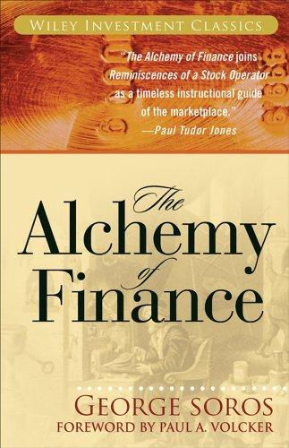

乔治·索罗斯（George Soros）是二十世纪最成功的宏观对冲基金经理之一，量子基金（Quantum Fund）的创始人。自1969年基金成立至1980年代末，量子基金的年均复合回报率高达约30%，索罗斯因此成为华尔街传奇。1986年，索罗斯将自己多年的投资哲学与市场理论系统整理成书，写就《金融炼金术》，由西蒙与舒斯特出版社出版。全书并非轻松读物，但对于任何希望理解索罗斯思维框架的读者而言，这是无可替代的第一手文本——在这里，一位真正经历过市场的实践者以最诚实的方式剖解自己的理论与局限。
本书的理论核心是索罗斯原创的"反身性理论"（Theory of Reflexivity）。传统经济学假设市场参与者是理性的，且其决策基于对客观现实的准确判断；索罗斯则认为这一假设根本性地错误。他指出，市场参与者的认知永远是不完整且带有偏见的，而这些有缺陷的认知本身会影响市场价格，被改变的价格又进一步影响参与者的判断与行动，形成双向反馈的循环。这一"思维与现实的相互影响"正是金融市场与物理系统的本质区别：市场不是被动地反映现实，而是主动地参与现实的塑造。
书中最独特的部分，是索罗斯将理论付诸实践的真实记录——他在1985至1986年间实时记录了自己管理量子基金的交易决策过程，包括对外汇市场、债券市场、股票市场的判断依据，以及预测失误后的反思与调整。这种第一人称、实时记录的叙事方式，使读者得以近距离观察一位世界级投资者如何在不确定性中构建信念、执行操作、检验假设。索罗斯毫不讳言自己的判断错误，这种坦诚本身就是一种罕见的智识诚实。
前美联储主席保罗·沃尔克（Paul A. Volcker）为本书作序，称其为"一位独立、探索的心灵，以诚实的努力突破陈旧正统，对金融与人类行为提出新颖而有意义的洞见"（"An honest struggle by an independent and searching mind to break through an old and stale orthodoxy with new and meaningful insights into financial and human behavior"）。《金融炼金术》并非一部轻松的投资指南，它挑战读者重新审视市场的本质、认知的局限与理论的边界。对于追求深层次市场理解的投资者与思想者，这是一部值得反复精读的经典。